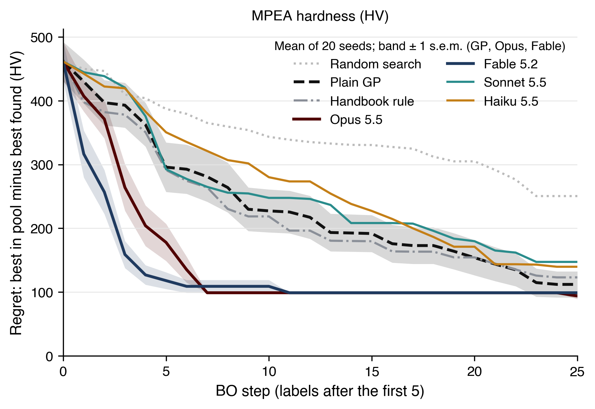

MATERIALS SCIENCE & ENGINEERING
TEXAS A&M UNIVERSITY
Department of Materials Science and Engineering
34

Regret, HV
after 5 steps:
GP 296, Opus 178, Fable 118
after 25 steps:
GP 112, Opus 94, Fable 99
Sonnet 147, Haiku 140